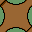
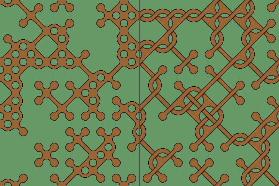
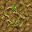
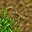
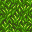
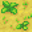
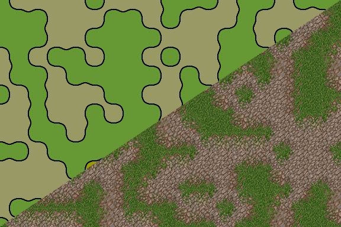

2-corner Wang Tiles
Wang tilesets are usually edge tilesets. But we can also create a Wang tileset by considering the tile corners. Each tile has four corners so for 2 different types of corner we have 2^4 or 16 different tiles, the same number as 2 different edges.
It may seem that matching corners will produce similar results as matching edges, but this is not so. An edge only affects one adjacent tile, while matching a corner affects three adjacent tiles.
Corner Wang tiles create areas (or patches) of matching terrain. Although not a maze of paths or passages, a complex layout of terrain patches, separated by barriers (ditches, walls, fences etc) can provide a difficult course to navigate through.
2-corner Tileset
Here is a typical set of corner Wang tiles. You can see that every tile has two different types of corner: blue or yellow. This gives 2x2x2x2 or 2 to the power 4, (written as 2^4), giving 16 possible combinations. Hence 16 different tiles, with index numbers 0 to 15.
| 0 | 1 | 2 | 3 | 4 | 5 | 6 | 7 | 8 | 9 | 10 | 11 | 12 | 13 | 14 | 15 |
The tileset is said to be 'complete' as it includes every possible combination of two corners. We can use these to tile a grid where all tile corners match.
Bitwise Tile IndexWith some bitwise maths, we can compute a unique 'index' number for each tile. Yellow NorthEast corner = 1 Blue corners are ignored. |
This tile has yellow corners NorthEast(1) and NorthWest(8). Adding up gives a tile index of '9'. |
Random Wang Tiles
We can arrange Wang tiles in a grid array. For each position, a tile is selected at random from the tileset, always ensuring that all corners match adjacent tiles.
See Terrain Tiles.
See Stage for random terrain arrays.
Stage: Random 2-corner Wang Tiles

Path Tileset
Here is a path tileset which as you can see is very similar to the 2-edge path tileset, which is shown here for comparison. The corner tilset appears rotated by 45°. A few different tile variations are also shown.
|  | |||||||||||||||
| 0 | 1 | 2 | 3 | 4 | 5 | 6 | 7 | 8 | 9 | 10 | 11 | 12 | 13 | 14 | 15 |
We can use these 2-corner tiles to tile a grid where all tile corners match.
Stage: Random 2-corner Path Tiles
Terrain Tilesets
Wang corner tiles make good terrain tiles. You can see that every tile has two different types of corner.
|  |  |  | |||||||||||||
|  | |||||||||||||||
| 0 | 1 | 2 | 3 | 4 | 5 | 6 | 7 | 8 | 9 | 10 | 11 | 12 | 13 | 14 | 15 |
We can use these terrain tiles to create a grid where all tile corners match.
See Terrain Tiles for more info and images.
See Stage for random terrain arrays.
Stage: Random 2-corner Terrain Tiles
